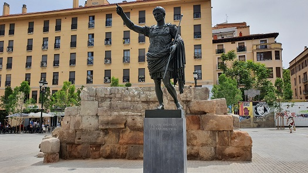

|
HISTORIA
La ciudad romana se fundó
sobre la ciudad ibero-sedetana pero profundamente romanizada de Salduie,
se fecha la fundación romana hacia el año 15 a.e.c., coincidiendo con la
reorganización de las provincias de Hispania llevada a cabo por Augusto
tras su victoria en las Guerras Cántabras. La nueva ciudad recibe el
nombre de Colonia Caesaraugusta, siendo la única ciudad romana que gozó
del privilegio de ostentar el nombre completo de su fundador.
En la fundación de la nueva colonia se desarrolla de acuerdo con el rito
tradicional romano, participaron soldados veteranos de las legiones IV
Macedonica ("Macedonia"), VI Victrix ("Victoriosa") y X Gemina ("Gemela"),
licenciados tras la dura campaña contra los cántabros, con la doble
intención de garantizar la defensa del territorio a la vez que fijar en él
la presencia de Roma. Caesaraugusta, también, es fundada como "Colonia
Inmune", lo que supone entre otros privilegios el derecho a acuñar moneda
y la exención del pago de impuestos.

El Convento Jurídico Caesaraugustano es el más extenso de los siete en los
que se divide la Provincia Tarraconense. Desde un principio, Caesaraugusta
asume el papel de cabecera regional, sustituyendo en esta función a la
Colonia Victrix Ivlia Celsa (Velilla de Ebro), y aprovechando su excelente
ubicación en un enclave estratégico de primer orden como cabeza de puente
sobre el río Ebro en un cruce de caminos junto a la desembocadura de los
ríos Gállego y Huerva.
El periodo de esplendor de la ciudad se prolonga durante los siglos I y II
y a él corresponden las grandes obras públicas, de las que se conocen
restos del foro, el puerto fluvial, las termas públicas, el teatro, y de
lo que parece ser un anfiteatro. A esta época corresponden también la
construcción del primer puente de la ciudad y el establecimiento de un
complejo sistema de abastecimiento de agua y saneamiento. El perímetro de
la ciudad en estos momentos, excede el que tendrá en los siglos
posteriores y la población se extiende hasta la ribera del río Huerva,
formando manzanas de casas organizadas a partir de un urbanismo reticular.
A partir del siglo III, Caesaraugusta también sufre el proceso de crisis
generalizado en todo el mundo romano y prueba de ello es la construcción
de una potente muralla (segunda mitad del siglo III), el abandono de
grandes obras públicas como la red de alcantarillado o de abastecimiento
de agua, y la destrucción de edificios públicos para reutilizar sus
materiales constructivos en las nuevas obras civiles en el caso del
teatro, para construir la muralla. No obstante, las noticias que hay sobre
la época nos hablan del mantenimiento de la vida urbana y la actividad
comercial siendo frecuentes las importaciones entre las que destacan los
sarcófagos paleocristianos conservados en la iglesia de Santa Engracia.
A lo largo del siglo V Caesaraugusta se ve inmersa en un proceso de
desintegración del poder imperial. En el año 409 se produce la llegada a
Hispania de los primeros contingentes bárbaros, que habían invadido el
territorio romano tres años antes. Desde entonces Caesaraugusta se
convierte en una ciudad estratégica, por su situación y sus imponentes
murallas, que juega un importante papel en las luchas por el trono de
Roma. Incluso en este siglo fue sede imperial dos veces, aunque muy
brevemente: en el año 410, durante el reinado de Constante, y en el 460,
durante el reinado de Mayoriano. Las continuas incursiones de bandas de
campesinos y ciudadanos arruinados, esclavos fugitivos, desertores y
montañeses motivaron la intervención del ejército visigodo, aliado de
Roma.
Los visigodos, al mando del conde Gauterico, ocupan Caesaraugusta en el
año 472. A partir de este momento, la ciudad se convierte en parte del
reino visigodo de Tolosa, y con el tiempo cambiará su nombre por el de
Cesaracosta.
Han Aparecido
restos de la pavimentación del Decumano, en la calle Manifestación. Esta
vía cruzaba la ciudad de este a oeste y comenzaba en la Iglesia de la
Magdalena para acabar en la Puerta de Toledo. El Decumano, discurría por
las actuales calles Méndez Núñez, Manifestación y Espoz y Mina con los dos
extremos de las puertas de Valencia y de Toledo.
Se ha hallado una losa de un metro cuadrado de tamaño, data posiblemente
de finales del siglo I o principios del II y son los primeros indicios de
una calle romana.
También se han hallado dos mosaicos en la calle Alfonso. El primero de
ellos policromo y con motivos vegetales, mientras que el segundo era en
blanco y negro; y una cloaca romana hallada en la calle Loscos. A estos
dos hallazgos se sumó la aparición de un mosaico un situado en la calle
Jusepe Martínez.
En el museo de
Zaragoza, se puede visitar la reconstrucción de la casa romana de
la calle Añón. Es un yacimiento arqueológico aparecido en mayo del año
2000 en la calle Pedro Garcés de Añón. Son los restos de una domus o
vivienda de carácter señorial de Caesaraugusta de época claudia.
|